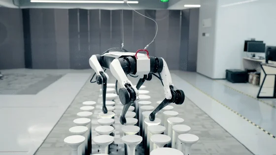

Database · Tech Giants
Tencent Robotics X
Tencent Robotics X is the robotics lab of China's internet giant, known for the Max quadruped and Ollie wheeled-leg robots.
Quadruped Tech-giant Shenzhen

Company Overview
- Tencent Robotics X explores legged and embodied robots backed by Tencent's AI and cloud resources.
- Its Max quadruped and Ollie wheeled-leg robot showcased advanced motion control and robustness.
- Signals big-tech commitment to China's robotics ecosystem.
Key Facts
| Full Name | Tencent Robotics X Laboratory |
|---|---|
| Chinese Name | 腾讯Robotics X实验室 |
| Founded | 2018 |
| Headquarters | Shenzhen |
| Core Products | Max quadruped, Jerry, Ollie wheeled-leg robot |
| Parent | Tencent (0700.HK) |
| Status | Flagship corporate robotics lab |
Data Snapshot
| Model | "Brains not bots" — no mass-produced hardware; R&D lab inside Tencent |
|---|---|
| Director | Zhang Zhengyou (former Microsoft Research, computer-vision pioneer) |
| Latest Robot | Xiaoliu (小六): 165cm / 70kg / 38 DoF, tendon-driven arms, 3-finger hands, TCM massage skills |
| Open-Source Models (Aug 2026) | 3 core models incl. Hy-Embodied-VLM-1.0 and Hy-Embodied-RxBrain-1.0 |
| OpenClaw Ecosystem | Open-source embodied-agent stack; first partner LEXM (乐行) |
| Tairos Platform | China's first plug-and-play embodied-AI platform, with Futian Lab |
Products & Specs
| Product | Type | Key Specs | Status |
|---|---|---|---|
| Xiaoliu (小六) | Service humanoid | 165cm / 70kg / 38 DoF; tendon-cable arms; tactile+force sensing; learned TCM massage | Unveiled WAIC Jul 2026 |
| Xiaowu (小五) | Wheel-legged compound robot | Elderly-care tasks; first cross-floor delivery in a commercial complex | Deployed 2024-09 |
| Tairos | Embodied-AI platform | Plug-and-play; deployed on Unitree, PaXini, UBTECH, Leju, Dobot, Engine AI robots | Live |
| OpenClaw | Open-source agent | Embodied-agent stack for research | Open source |
Key Partners
- Unitree, PaXini, UBTECH, Leju, Dobot, Engine AI — robots running Tairos
- Futian Lab — co-built Tairos
- LEXM (乐行) — first OpenClaw integration
Recent Milestones
- Sep 2024 — Xiaowu unveiled for elderly care
- 2025-2026 — Tairos deployed across major Chinese robot brands
- Jul 2026 — Xiaoliu unveiled at WAIC with TCM massage skills
- Aug 2026 — Three embodied-AI models open-sourced
Actuators & Sensors
- High-torque joints for dynamic locomotion.
- Wheeled-leg hybrid designs.
- Advanced whole-body control algorithms.
Supply-Chain Analysis
- Leverages Tencent AI/cloud; hardware via domestic partners.
- Shenzhen engineering.
Competitor Comparison
Comparable to other big-tech labs (Xiaomi's CyberDog, Baidu) exploring quadruped/humanoid platforms.